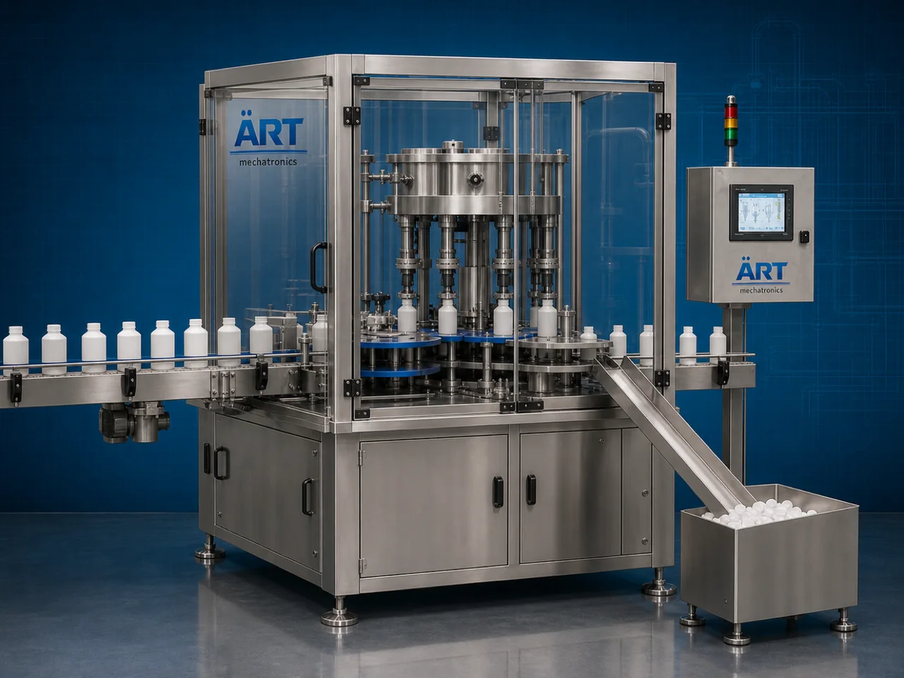

Container Decapper Machine (Automatic Bottle, Jar & Drum Decapping System)
A Container Decapper Machine, also known as a Bottle Decapping Machine, Cap Removing Machine, Automatic Container Opener, or Industrial Decapping System, is an advanced industrial packaging solution designed for automatic container feeding, cap loosening, closure removal, spray pump removal, drum…

About the Container Decapper Machine
Container decapping systems are widely used for: ✔ Bottle cap removal ✔ Jar lid opening ✔ Jerry can decapping ✔ Drum bung removal ✔ Gallon cap opening ✔ Spray pump removal ✔ Container reprocessing operations ✔ Industrial liquid handling systems
The machine improves: ✔ Production efficiency ✔ Container handling safety ✔ Cap removal accuracy ✔ Packaging line automation ✔ Reusability processing efficiency ✔ Labor reduction ✔ Industrial workflow speed
Industrial container decapping machines use: ✔ Automatic container feeding systems ✔ Servo synchronized decapping heads ✔ PLC and HMI automation controls ✔ Torque controlled cap removal systems ✔ Conveyor synchronized handling systems
to automatically remove caps and closures from containers with superior operational efficiency and high production speed.
Container decapping machines are widely used in industries such as:
Beverage industries Food processing industries Chemical industries Cosmetic industries Pharmaceutical industries Lubricant industries Agrochemical industries FMCG industries
where container reuse, product transfer, reprocessing, and automated cap handling are essential.
The machine is highly suitable for: ✔ Bottle decapping operations ✔ Drum opening systems ✔ Jerry can cap removal ✔ Gallon lid opening ✔ Industrial container handling ✔ Reusable packaging systems
ART Mechatronics offers high-performance container decapping machines, engineered for continuous industrial operation, precision cap removal performance, safe container handling, and reliable long-term packaging automation.
Working Principle of Container Decappper Machine
- 1. Container Feeding Containers are automatically fed into decapping section through synchronized conveyor systems.
- 2. Cap Detection & Positioning Process Machine automatically detects and aligns caps or closures before removal operation.
Servo synchronization ensures accurate cap engagement and smooth container handling.
- 3. Decapping Operation Machine handles: ✔ Screw caps ✔ Spray pumps ✔ Jar lids ✔ Drum bungs ✔ Gallon caps ✔ Jerry can closures ✔ Canister lids
accurately and continuously.
- 4. Torque Controlled Cap Removal Process Machine performs: Cap loosening Closure opening Pressure controlled removal Safe cap handling Automatic cap discharge
for smooth and damage-free container opening operations.
- 5. Inspection & Automation Integration Optional systems include: Cap presence detection Vision inspection systems Reject systems Container alignment systems Automation synchronization systems
- 6. Finished Container Discharge Opened containers discharged automatically for: Refilling operations Cleaning processes Product transfer systems Reprocessing operations
Types of Container Decappper Machines
- 1. Bottle Decapping Machine Designed for: ✔ Beverage and liquid bottle packaging applications
- 2. Jar & Jug Decapping Machine Suitable for: ✔ Food and FMCG container opening systems
- 3. Jerry Can & Drum Decapping Machine Uses: ✔ Industrial liquid container opening systems
- 4. Gallon Cap Removing Machine Designed for: ✔ Large volume liquid packaging systems
- 5. Servo Driven Decapping Machine Suitable for: ✔ Precision high-speed cap removal operations
- 6. Fully Automatic Container Decapping System Designed for: ✔ Complete industrial packaging automation lines
Industries Using Container Decappper Machines
🥤 Beverage Industry Water bottles, juices, soft drinks, and beverage packaging systems. 🍅 Food Processing Industry Sauces, syrups, edible oils, and food liquid packaging systems. ⚗️ Chemical Industry Industrial liquids, solvents, and chemical container handling systems. 🧴 Cosmetic & Personal Care Industry Perfumes, lotions, shampoos, and cosmetic packaging systems. 🛢️ Lubricant Industry Industrial oils, lubricants, and heavy-duty liquid container systems. 🛒 FMCG Industry Consumer liquid products and reusable packaging systems.
Features & Advantages
✔ High-speed automatic container decapping operation ✔ Accurate torque controlled cap removal systems ✔ Safe and damage-free container handling ✔ PLC and servo automation control systems ✔ Improves industrial workflow efficiency ✔ Reduces manual opening dependency ✔ Supports multiple cap types and container sizes ✔ Reliable long-term industrial performance ✔ Smooth and continuous packaging line integration
Technical Highlights
Machine Type: Automatic container decapper machine Industrial cap removing system Packaging line opening machine Container Type: PET bottles Glass jars Jerry cans Canisters Drums Gallons Buckets Closure Compatibility: Screw caps Spray pumps Jar lids Drum bungs Industrial sealing caps Features: PLC control system Servo synchronization Touchscreen HMI Automatic cap removal systems Torque control systems Applications: Beverages Oils Chemicals Cosmetic liquids Detergents Industrial liquids Automation: Semi-automatic Fully automatic industrial systems
Turnkey Container Decappper Solutions
ART Mechatronics offers: Complete decapping systems Automatic cap removal solutions Packaging automation integration systems Conveyor synchronization systems Installation & commissioning After-sales service & AMC
Why Choose Art Mechatronics
Expertise in industrial packaging and automation systems Customized decapping solutions for multiple industries High-performance and precision cap removal technology Advanced PLC and servo automation systems Proven industrial packaging performance across sectors
Applications
Beverage Manufacturing Plants Food Processing Industries Chemical Packaging Facilities Cosmetic Manufacturing Units Industrial Liquid Packaging Plants FMCG Packaging Industries
Get pricing & specs for the Container Decapper Machine
Share the product, target capacity, current process and plant location. These details help our engineers discuss the right machine or line configuration.
One partner, from design to start-up
ART Mechatronics designs, manufactures, installs and commissions your Container Decapper Machine solution with regional presence in India, UAE and Thailand.